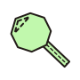
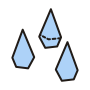
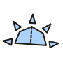
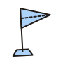
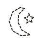
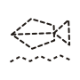
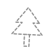
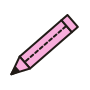
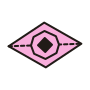
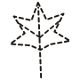

발견 배지얼마나 많이 발견했는가

첫 발견2027.11.2210종 탐험가2027.11.20나비 박사2027.11.04

30종 탐험가곤충 6번 더 만나기
관찰 배지어떤 환경에서 탐험했는가



비오는 날2027.11.13아침 탐험가2027.10.09새로운 장소2027.10.18



해 질 녘 탐험오후 5시 이후 탐험물가 탐험가연못, 개울 근처공원 탐험가새로운 공원 3곳 더
특별 배지특별한 경험을 했는가



함께 발견2027.11.12첫 그림2027.10.09LOOK 관찰자2027.11.17

가을 탐험가을에 곤충 3번 더